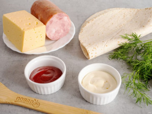
Подготовьте все необходимые ингредиенты.
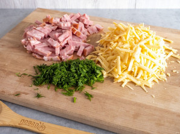
Сыр натрите на крупной терке, ветчину нарежьте небольшими брусочками, зелень мелко порубите.
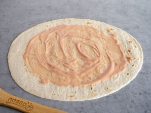
Майонез смешайте с кетчупом и смажьте первую тортилью.
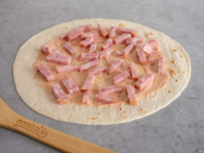
Затем выложите слой колбасы.
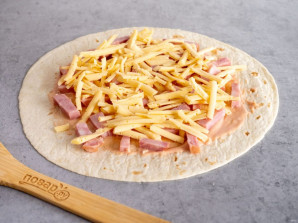
Следом тертый сыр.
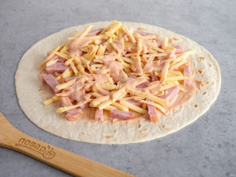
Снова смажьте небольшим количеством соуса.
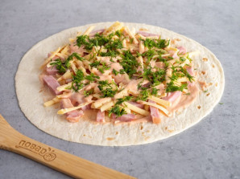
Посыпьте зеленью.
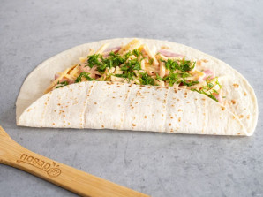
И сверните в конверт. Сначала подверните нижний край.
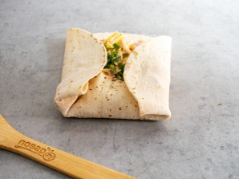
Затем верхние и боковые.
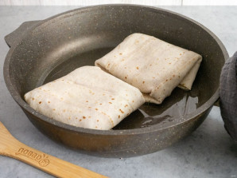
На сковороде разогрейте небольшое количество растительного масла и выложите тортильи швом вниз. Обжарьте с двух сторон до румяности.
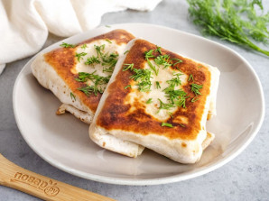
Подавайте к столу сразу горячими или теплыми, чтобы сыр был тягучим.
Приятного аппетита!